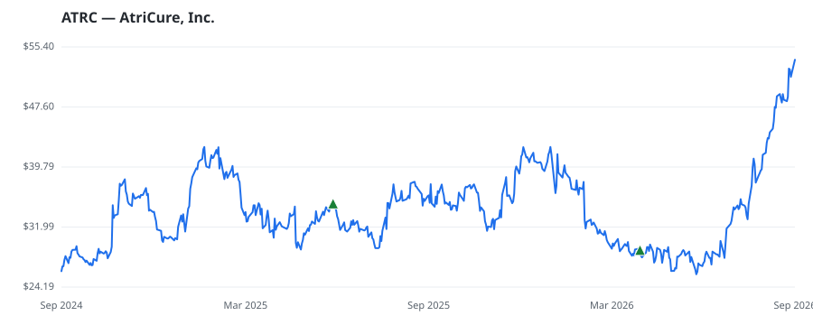

bullish · bearish · n/a — dots: price>SMA10 · SMA10>SMA50 · SMA50>SMA200 · up>down volume (20d)
Health Care Equipment & Services · small cap
Members who bought ATRC earned a dollar-weighted +80.4% from their disclosure dates, versus +28.2% for the S&P 500 over the same holding windows (+52.2% alpha).

▲ green = a disclosed purchase · ▼ red = a disclosed sale (plotted on disclosure date)
AtriCure Inc is an innovator in surgical treatments and therapies for atrial fibrillation (Afib), left atrial appendage (LAA) management, and post-operative pain management, and sells its products to medical centers through its direct sales force and distributors. Its product line includes Cryo, Soft Tissue Dissection, RF Ablation, Pacing and Sensing, and others. Geographically, it generates a majority of its revenue from the United States. Cardiac ablation and left atrial appendage management (LAAM) products are used by physicians during open-heart and minimally invasive surgical procedures. SURGICAL & MEDICAL INSTRUMENTS & APPARATUS · website
| Revenue | $534.5M | Net income | $-11.4M |
|---|---|---|---|
| Operating income | $-9.4M | Diluted EPS | $-0.24 |
| Assets | $654.2M | Equity | $491.9M |
| Member | Chamber | Out-performer | Disclosed buys $ | Return on buys |
|---|---|---|---|---|
| Gilbert Cisneros | house | — | $16K | +62.9% |
| Josh Gottheimer | house | — | $8K | +115.5% |
Disclosed $ figures are bracket midpoints — filings report ranges (e.g. $1,001–$15,000), not exact amounts.
| Fund | Fund alpha vs SPY | Position | % of book |
|---|---|---|---|
| Knott David M Jr | +17% | $1M | 0.8% |
| PERKINS CAPITAL MANAGEMENT INC | +25% | $0M | 0.4% |
Hedge data: SEC EDGAR 13F · ranked funds beat SPY in >50% of their quarters · fund alpha = mirror-portfolio return minus SPY.